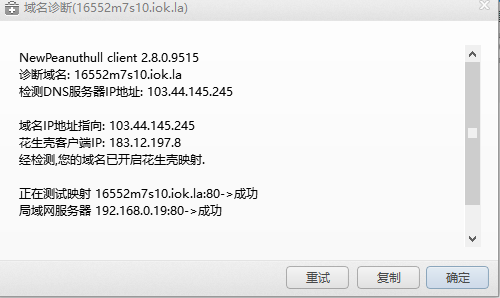

原文出处:本文由博客园博主晏先生丶提供。
原文连接:https://www.cnblogs.com/yandq/p/11058815.html
原文连接:https://www.cnblogs.com/yandq/p/11058815.html
微信公账号接入指南
一、配置花生壳
1.下载并注册花生壳账号 下载地址：http://hsk.oray.com/download/

2.双击域名
3.单击“确定”按钮，保存成功后，返回花生壳主窗体，右击你的域名，选择域名诊断,测试映射成功

二、编写接入代码
1.打开VS，新建一个空白解决方案，在解决方案中添加一个类库项目“WxApi”,用来封装微信相关接口，一个“WxTest”web应用程序，WxTest引用项目WxApi.
2.WxApi中新建一个名为“Utils”的类，类中代码编写如下
3.继续在WxApi中新建一个基础服务类“BaseServices”,代码编写如下：
4.在WxTest中新建一个一般处理程序wx.ashx
三、部署IIS
1.依次进入：“控制面板”——“程序”——“程序和功能”——“启用或关闭Windows功能”。如下图，点击确认。
2.“开始”——“运行”，输入“inetmgr”,进入iis管理界面。
3.右击网站，添加网站，端口必须为80，主机名为花生壳映射的域名
四、调试项目
1.以管理员身份运行之前新建的项目
2.右击WxTest,选择属性
3.Web配置如下，项目URL填写为http://+花生壳域名，填写后按Ctrl+S保存
4.点击调试选择附加到进程

5.勾选显示所有用户进程，点击刷新，找到红框中的进程，点击附加
五、微信公众平台
1.进入微信公众平台，进入开发者中心，找到服务器配置，点击修改配置。填写URL和token，点击提交，配置成功。